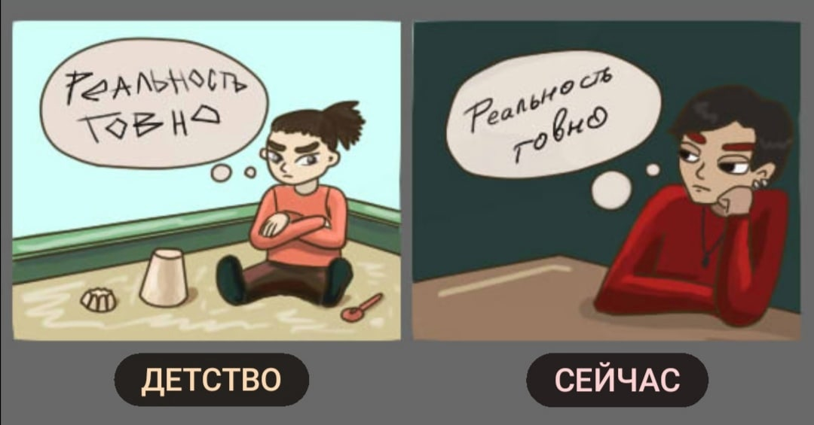
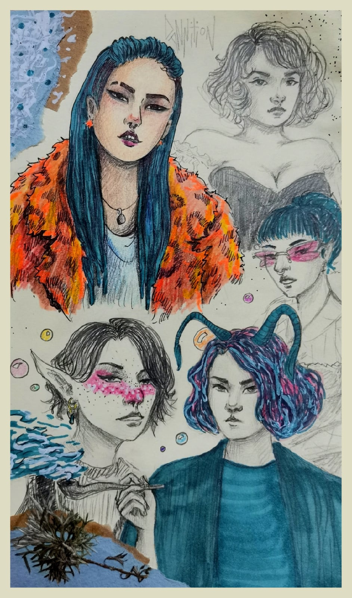
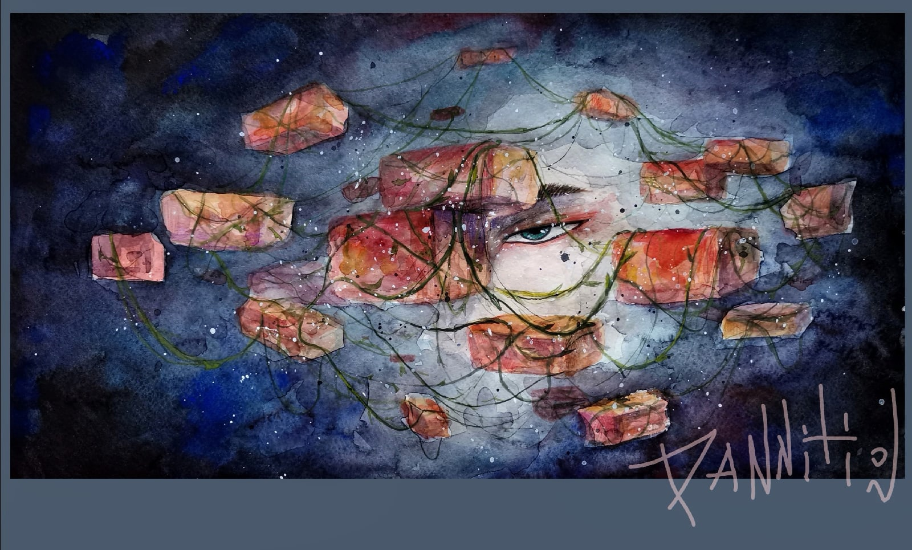
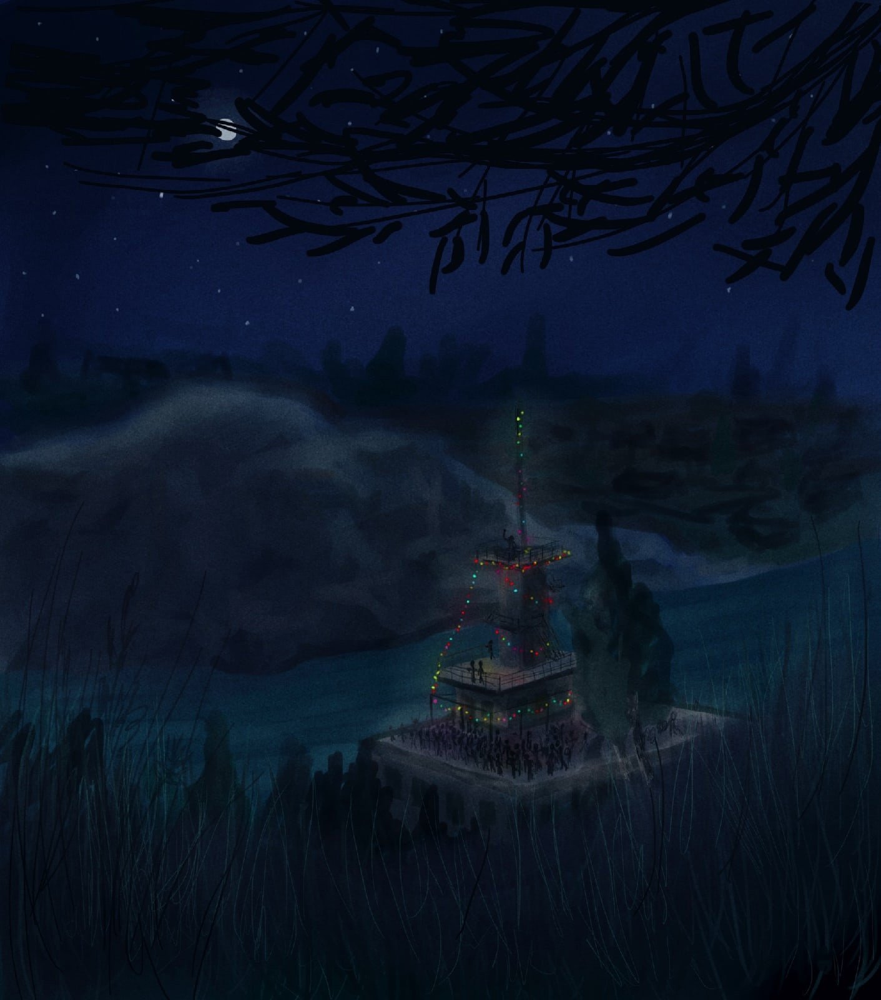
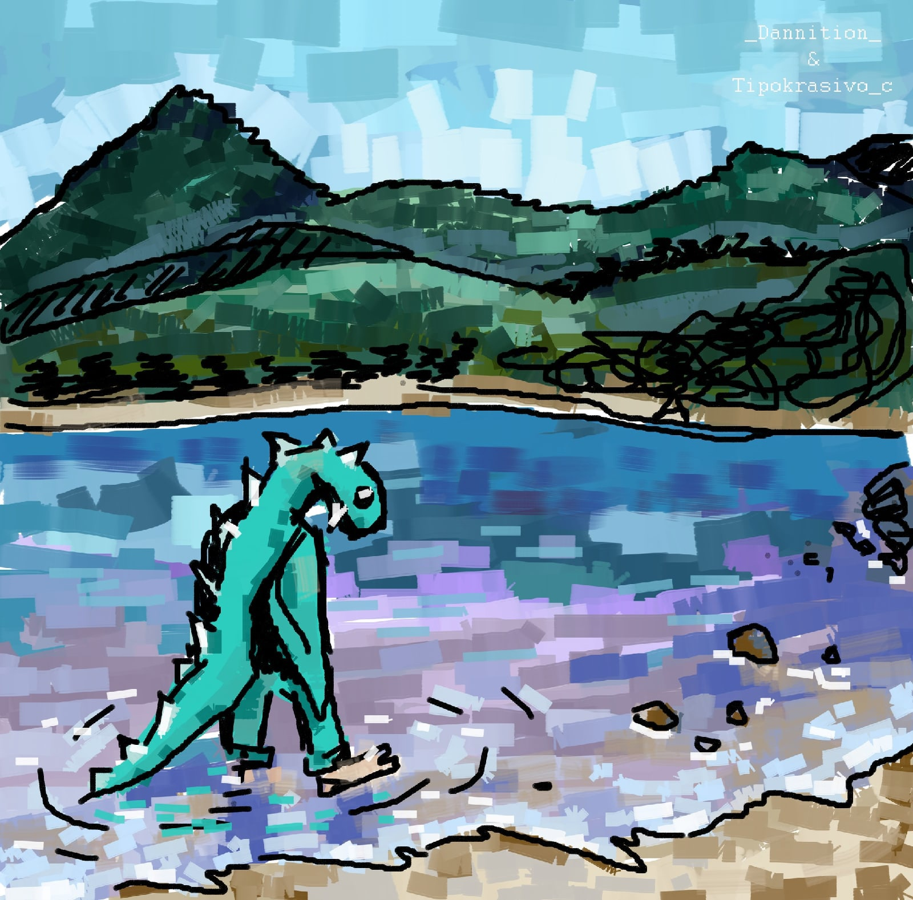
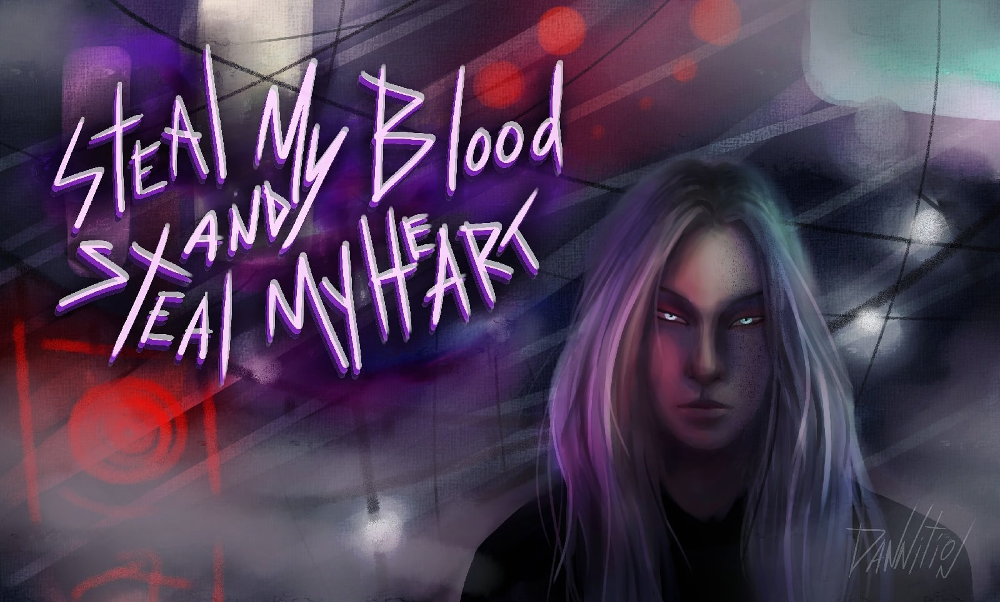

где мои драконы, феи и единороги???
а ещё летать хочу
а ещё летать хочу

-типа вот..
-типа вот ты не сдох?
-ну типа...
-типа вот ты не сдох?
-ну типа...


мама рассказала, что когда-то, в летние ночи там проходили дискотеки, висели гирлянды,
а пульт диджея находился на самом верху🌌

with Ян


здрасте, эт я, а музыка это хаос мыслей в моей голове
(цвет музыки теплее и светлее и не совпадает с фоном, но пофиг)
(цвет музыки теплее и светлее и не совпадает с фоном, но пофиг)

не хочу ничего делать ааааа
хочу рисовать под музыку🤧
хочу рисовать под музыку🤧

почему нельзя жить во сне, у меня были бы прекрасные виды для того, чтобы заняться бокетто

дедовский возраст, в котором после бессонной ночи просто вырубаешься днем
афтар тож потом уснул и ощущал какие-то трипы🤪
афтар тож потом уснул и ощущал какие-то трипы🤪

да, я в курсе что ещё не 31

ля из какого аниме персонаж??

какая-то зарисовка

автор устал ждать..
ДАЙТЕ ПРОДУ В КР ПО ЛИ
ну а это просто красивый ёкай, намерения которого неизвестны🙃
ДАЙТЕ ПРОДУ В КР ПО ЛИ
ну а это просто красивый ёкай, намерения которого неизвестны🙃

тени с грустными глазами

тучки, дождег, лужицы, свобода, лёгкость

скетчи дев

я забыл про подвеску у итачи :с
У Ч И Х А
ИТАЧИ
🤪ненавижу гуашь и портреты
У Ч И Х А
ИТАЧИ
🤪ненавижу гуашь и портреты

наруто головного мозга или как нарутотерапия заставляет рисовать цветными карандашами...
обожаю песчаных гопничков🤪
обожаю песчаных гопничков🤪

результат мучений работы

не шедевр, но душевно
как же хочется пойти куда-то с красками и порисовать, а не сидеть с фоткой
как же хочется пойти куда-то с красками и порисовать, а не сидеть с фоткой


нервы закатили вечеринку и пригласили мирового змея, сейчас он сползает за пиццей и присоединится🔥

-Ради всего ада, за что я такой горячий?? ©️ Кроули такой Кроули

лох это
-подумать, что успею поучаствовать в конкурсе, но начать рисовать только за 4 дня до дедлайна, а потом вспомнить про учебные дедлайны, иии в результате ничего не успеть нормально доделать 🤡✨
однако я потренировался в быстром рисовании и попробовал изменить стиль~
-подумать, что успею поучаствовать в конкурсе, но начать рисовать только за 4 дня до дедлайна, а потом вспомнить про учебные дедлайны, иии в результате ничего не успеть нормально доделать 🤡✨
однако я потренировался в быстром рисовании и попробовал изменить стиль~